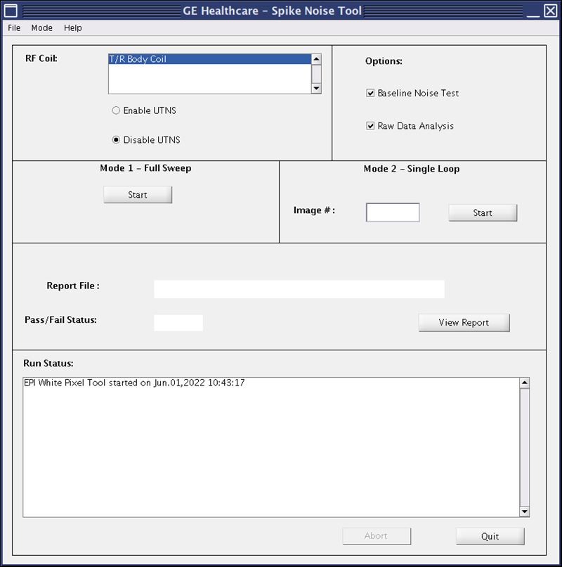
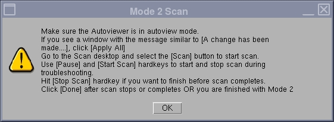

This procedure uses echo planar image (EPI) scans and the raw data mode of recon to analyze the raw data for white pixel artifacts. These raw data artifacts can exhibit themselves as corduroy artifacts in images.
Before working in any GE HealthCare MR suite or doing any GE HealthCare service procedure, you must:
Have read and understood all hazard conditions and safety requirements in the latest revision of the GE HealthCare MR Service Safety Manual (5452735).
Have successfully completed all relevant GE HealthCare Environmental Health and Safety (EHS) courses (or for non-GE HealthCare employees, equivalent workplace training courses).
Comply with all site-specific training and workplace safety requirements.
If you have any safety concerns at any time, do not begin work or immediately stop work and move to a safe location. Immediately contact your supervisor or site safety officer for instructions on how to proceed.
About this task
There are two modes of operation for the EPI White Pixel Test.
Mode 1 creates 48 images while iterating on Readout Axis (X, Y, Z), (readout gradient fundamental frequency), and placement of the data acquisition window over the attack knee and decay knee of the readout trains positive and negative lobes. In addition, Mode 1 generates various report fields and plot files that can be used to analyze white pixels. Mode 1 has been incorporated in the echo planar test (EPT) test to be run as a single test.
Mode 2 prompts you to enter an image number that generated the most white pixels from the Mode 1 test and allows you to use the real-time display feature of EPI to loop on that condition for troubleshooting purposes.
Procedure
At the keypad on the front magnet enclosure, LANDMARK on the S/I center of the head coil.
Press MOVE TO SCAN.
On the MR Service Desktop, start the Service Browser (if not already running).
On the Image Quality tab, select EPI White Pixel Test > Click here to start this tool.
Result
The GE Healthcare – Spike Noise Tool dialog opens.
Select the following:
Disable UTNS
Baseline Noise Test
Raw Data Analysis
Figure 1. Spike Noise Tool user interface

Click Start for the Mode 1 – Full Sweep test.
Result
As the test runs, the Run Status is displayed. When the test is finished, the Pass/Fail Status displays PASS or FAIL.
Click View Report to view the file's content.
(For software version 29 and earlier)
A file called sn_report.body or sn_report.head is created showing a header file and the white pixel information (if any). These output files are stored on the system in /usr/g/bin.
(For software version 30 and later)
The EPIWP tool result files are in the format EPIWP_<date>_<time>_<coil>.json and contain details regarding the test performed. Click the File menu in the EPI WP viewer to select additional files. These output flies are stored on the system in /usr/g/service/data.
To run Mode 2, follow the instructions above to start the tool, with the exception of selecting Mode 2 – Single Loop.
When prompted for the image number, enter the image number (1-48) determined from the Mode 1 – Full Sweep test. A Mode 2 Scan prompt opens.
Figure 2. Mode 2 scan

Read the instructions on the Mode 2 Scan prompt.
Leave the window open; do not click OK to close the window while in Mode 2. If you click OK, the test session will end and you will have to restart it.
Mode 2 runs continuously for approximately four minutes for troubleshooting purposes (provided you do not press the Pause key).
To repeat the looping process, return to the Scan Desktop and press Scan again. Use the hard keys to run the test as described above.